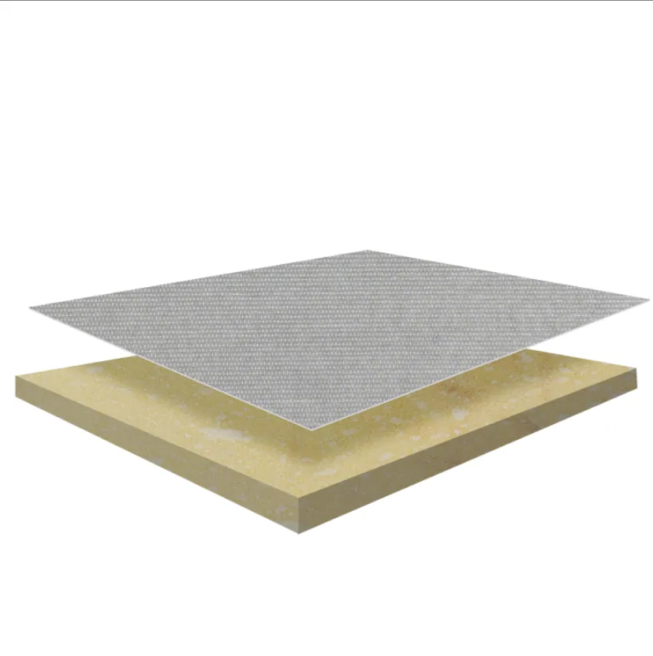
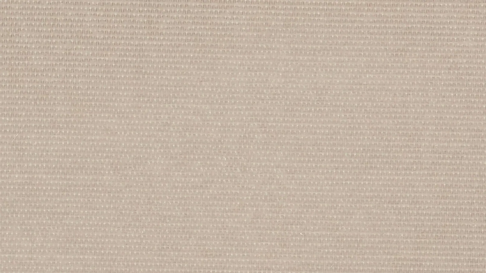
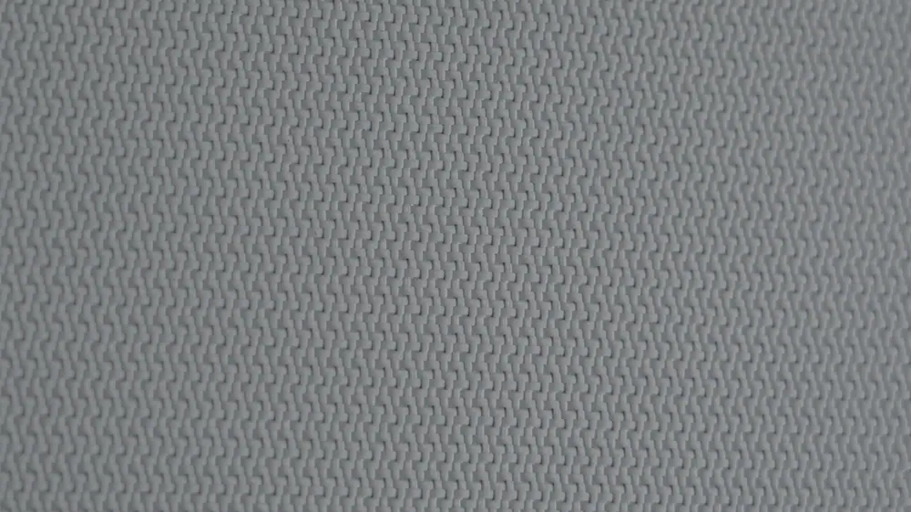
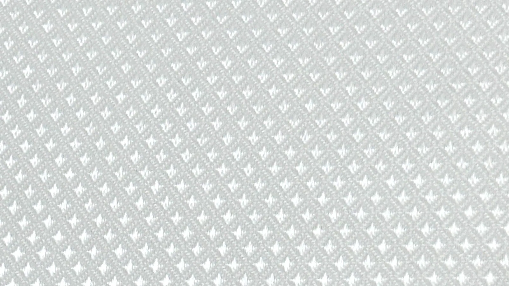
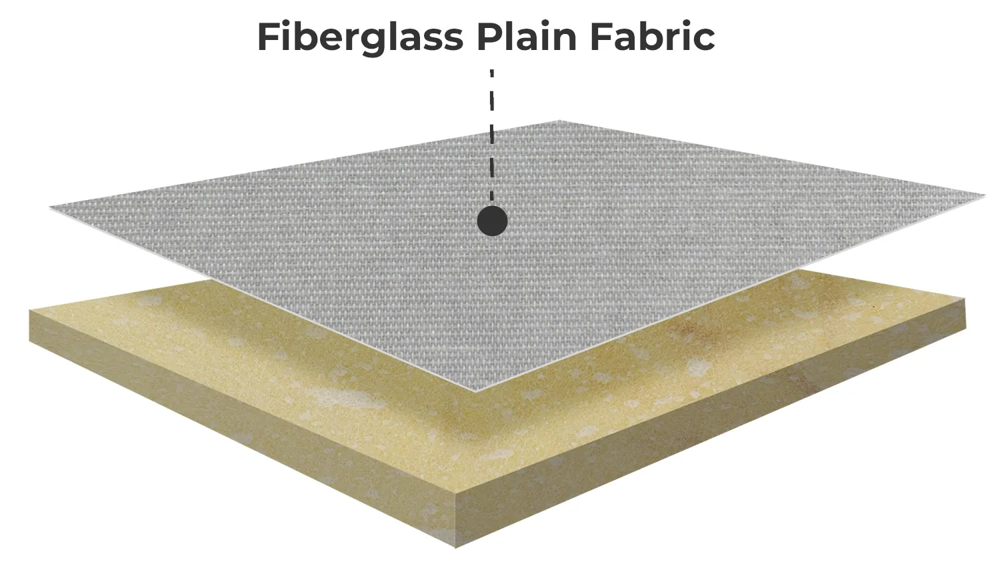
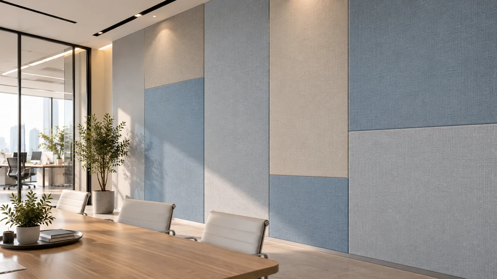
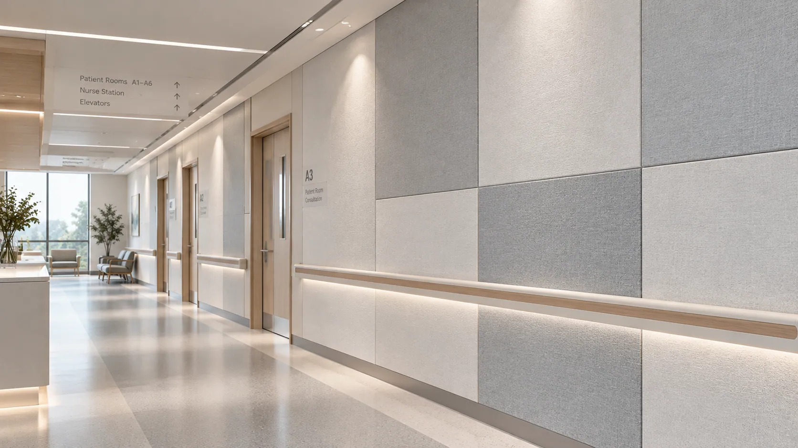

01 — Texture Consistency
Variations in yarn arrangement or weaving structure may create visible differences across adjoining acoustic panels.
01 — HERO BANNER
Eyebrow: DECORATIVE ACOUSTIC FABRIC SOLUTIONS
Woven for Design. Engineered for Acoustic Spaces.
Bring texture, depth, and refined fabric aesthetics to acoustic ceilings and walls.
GRECHO Acoustic Fiberglass Fabric combines distinctive woven patterns with a dimensionally stable fiberglass structure to support decorative surface design and acoustic compatibility in mineral wool and glass wool panel systems.
Available in three weave patterns to match different architectural styles and surface requirements.
Key Highlights

02 — SURFACE DESIGN CHALLENGES
Eyebrow: SURFACE DESIGN MATTERS
The surface of an acoustic panel shapes both its visual identity and functional design.
Architectural acoustic panels must do more than blend into a space.
Their facing materials influence surface texture, visual consistency, light interaction, and airflow characteristics.
For manufacturers, achieving a refined fabric-facing surface involves four essential considerations.
Variations in yarn arrangement or weaving structure may create visible differences across adjoining acoustic panels.
Different weave patterns produce different visual textures and light-reflection characteristics, affecting the finished panel's architectural appearance.
Fabric density, weave construction, and surface treatment can influence airflow resistance and the sound absorption performance of the completed panel.
An unsuitable fabric structure may create challenges during tension control, lamination, cutting, or panel conversion.
Required 02 — SURFACE DESIGN CHALLENGES / Small Weave Differences. Noticeable Visual Results..
The supplied image is not used in this slot.
Choosing the right acoustic fiberglass fabric helps manufacturers balance decorative appearance with production and acoustic requirements.
03 — GRECHO SOLUTIONS
Eyebrow: ENGINEERED FOR DESIGN FLEXIBILITY
The right woven structure connects surface design with material performance.
GRECHO Acoustic Fiberglass Fabric offers multiple weave patterns and selectable material characteristics to help manufacturers develop decorative acoustic ceiling and wall panels.
Different fiberglass weaving structures create refined surface textures for a wide range of architectural styles.
Selected weave patterns, coating characteristics, and surface finishes can be evaluated according to decorative requirements.
Fabric construction and surface treatment can be selected to support suitable airflow characteristics for different sound-absorbing core materials.
A dimensionally stable fiberglass fabric supports handling, lamination, cutting, and conversion during acoustic panel production.
04 — WEAVE PATTERN OPTIONS
Eyebrow: THREE WEAVES. DISTINCTIVE TEXTURES.
Different woven structures create different architectural expressions.
GRECHO Acoustic Fiberglass Fabric offers three weave pattern options, allowing manufacturers to select the desired surface texture and visual character for acoustic ceiling and wall panels.

Clean Structure. Timeless Simplicity.
Features a regular over-and-under yarn arrangement, creating a balanced and uniform woven texture.
Its consistent interlacing pattern delivers a clean, understated fabric appearance suitable for modern acoustic interiors.
Best For: Acoustic ceiling and wall panels requiring a simple, structured, and uniform textile finish.
Source-supplied appearance reference. Specific material identity remains subject to owner review.

Smooth Appearance. Refined Elegance.
Features longer yarn floats and fewer visible interlacing points, creating a smoother-looking surface with subtle directional texture.
The refined woven appearance adds a sense of softness and sophistication to decorative acoustic panels.
Best For: Premium acoustic ceiling and wall panels requiring a fine, elegant surface finish.
Source-supplied appearance reference. Specific material identity remains subject to owner review.

Decorative Patterns. Greater Design Freedom.
Features specially designed woven patterns that create distinctive textures and more complex decorative effects.
The versatile weaving structure allows manufacturers to explore different architectural expressions through patterned fiberglass fabric surfaces.
Best For: Decorative acoustic wall and ceiling panels requiring recognizable patterns and customized visual designs.
Source-supplied appearance reference. Specific material identity remains subject to owner review.
From simple and structured to refined and decorative, GRECHO helps manufacturers select fiberglass fabric textures according to their design preferences, acoustic requirements, and panel production needs.
05 — KEY ADVANTAGES
Eyebrow: MATERIAL PERFORMANCE
Four material characteristics that matter in decorative acoustic panel manufacturing.
Plain, satin, and jacquard structures provide different surface textures to match architectural design requirements.
Controlled weaving structures support consistent textile patterns and coordinated surface finishes across acoustic panels.
Selectable weave constructions and surface treatments allow manufacturers to evaluate appropriate airflow characteristics for different acoustic core systems.
The fiberglass substrate provides a stable material structure that supports reliable lamination, converting, and panel manufacturing.
More Texture Choices. More Freedom in Acoustic Design.
06 — PRODUCT STRUCTURE
Eyebrow: HOW IT WORKS
The facing connects architectural appearance with the acoustic panel beneath.
GRECHO Acoustic Fiberglass Fabric is designed for integration with suitable mineral wool and glass wool acoustic cores.
Its woven structure provides the visible decorative surface, while the core supplies the primary sound-absorbing function of the finished panel.

A woven fiberglass fabric featuring plain, satin, or jacquard patterns.
The material provides decorative surface texture, dimensional stability, and selectable airflow characteristics according to its weave construction and surface treatment.
Mineral wool or glass wool forms the primary sound-absorbing structure of the finished ceiling or wall panel.
Fabric density, weave structure, coating characteristics, and core material should be evaluated as a complete acoustic panel system to achieve the desired balance between appearance, adhesion, and sound absorption.
07 — PRODUCT SELECTION
Eyebrow: FIND YOUR FABRIC SOLUTION
Different interiors demand different combinations of texture, appearance, and acoustic performance.
GRECHO offers acoustic fiberglass fabric options to support a variety of ceiling and wall panel designs.
For Clean & Contemporary Interiors
A balanced woven texture with a regular yarn structure and consistent surface appearance.
Best For: Offices, classrooms, meeting rooms, and general acoustic ceiling and wall panels.
For Refined Architectural Finishes
A smoother-looking woven surface that offers a more subtle and elegant decorative appearance.
Best For: Hotels, premium offices, conference facilities, and architectural acoustic panels.
For Distinctive Decorative Designs
A patterned woven surface that supports more expressive architectural textures.
Best For: Hospitality spaces, decorative acoustic walls, auditoriums, and customized interior projects.
08 — TECHNICAL SPECIFICATIONS
Eyebrow: TECHNICAL INFORMATION
GRECHO supports acoustic fiberglass fabric selection according to weave pattern, decorative appearance, core compatibility, and manufacturing requirements.
| Parameter | Specification |
|---|---|
| Product | Acoustic Fiberglass Fabric |
| Base Material | Woven Fiberglass Fabric |
| Weave Options | Plain / Satin / Jacquard / Twill |
| Surface Appearance | Woven Textile Texture |
| Color | Grade-Dependent / Customizable |
| Surface Treatment | Grade-Dependent |
| Basis Weight | Grade-Dependent / Customizable |
| Thickness | Grade-Dependent |
| Roll Width | Customizable |
| Air Permeability | Weave & Treatment-Dependent |
| Tensile Strength | Grade-Dependent |
| Dimensional Stability | Fiberglass-Based Structure |
| Compatible Core | Mineral Wool / Glass Wool |
| Supply Form | Rolls |
| Customization | Weave Pattern, Width, Weight, Color & Surface Treatment |
Technical specifications, weave patterns, available colors, air permeability, and test results vary by product grade. Contact GRECHO for available fabric samples and detailed technical information.
09 — APPLICATIONS
Eyebrow: APPLICATIONS
Decorative fiberglass fabric solutions for architectural spaces where appearance and acoustic performance matter.
GRECHO Acoustic Fiberglass Fabric supports manufacturers in developing textured acoustic panels for commercial, educational, and hospitality environments.
A Refined Finish Above Every Space.
Fiberglass fabric provides a decorative woven surface for mineral wool and glass wool acoustic ceiling panels.
Different weave patterns allow manufacturers to create clean, smooth-looking, or more expressive ceiling finishes according to architectural requirements.
Key Requirements: Surface Consistency · Acoustic Compatibility · Decorative Texture
Application context only. Material grade and performance are not established by this image.

Texture That Shapes the Interior.
Fabric-faced acoustic wall panels combine decorative surface design with sound-absorbing core materials.
GRECHO fiberglass fabric offers different woven patterns to support architectural wall treatments and coordinated interior finishes.
Key Requirements: Design Flexibility · Surface Appearance · Processing Stability
Application context only. Material grade and performance are not established by this image.
A Balanced Environment for Work and Learning.
Offices, classrooms, and meeting spaces benefit from acoustic panel designs that combine functional sound absorption with clean architectural finishes.
Plain and satin weave fiberglass fabrics provide understated decorative options for these environments.
Key Requirements: Visual Consistency · Acoustic Comfort · Material Compatibility
Application context only. Material grade and performance are not established by this image.

Distinctive Textures for Expressive Interiors.
Hotels, restaurants, auditoriums, and entertainment venues often require acoustic treatments that complement the surrounding architectural design.
Satin and jacquard weave options allow manufacturers to explore decorative fabric textures for acoustic ceiling and wall panels.
Key Requirements: Decorative Variety · Pattern Consistency · Acoustic Compatibility
Application context only. Material grade and performance are not established by this image.
10 — SAMPLE & PRODUCTION VALIDATION
Eyebrow: FROM SAMPLE TO PRODUCTION
The right woven facing should meet both decorative and manufacturing requirements.
Different acoustic panel manufacturers work with different core materials, adhesives, lamination methods, and surface design expectations.
GRECHO supports fabric selection through structured material evaluation.
Share your acoustic core material, panel dimensions, preferred weave pattern, surface appearance, and performance targets.
Evaluate plain, satin, and jacquard patterns according to texture, appearance, color consistency, and relevant material characteristics.
Test the selected fiberglass fabric with your lamination process, core material, cutting equipment, and acoustic panel construction.
Finalize the appropriate weave structure, basis weight, roll dimensions, surface treatment, and technical requirements.
Our goal is to help you identify the appropriate combination of decorative texture, material stability, and acoustic compatibility.
11 — FREQUENTLY ASKED QUESTIONS
Eyebrow: FAQ
It is a woven fiberglass material designed for use as a decorative facing on compatible acoustic ceiling and wall panels.
Different weave structures create different surface textures and visual characteristics.
Plain weave features a regular over-and-under yarn structure, creating a balanced texture.
Satin weave uses longer yarn floats to create a smoother-looking surface.
Jacquard weave allows more complex decorative patterns to be incorporated into the fabric structure.
Yes. Fabric weave density, airflow resistance, and surface treatment can influence the acoustic performance of the finished panel.
The fabric should be selected and tested together with the sound-absorbing core.
Fiberglass fabric can be evaluated for both applications.
The appropriate product grade depends on the panel construction, installation method, surface requirements, and applicable performance standards.
Customization options may include color, weave pattern, width, basis weight, and surface treatment, subject to product grade and manufacturing feasibility.
Fiberglass is an inorganic, noncombustible fiber, but the fire performance of a finished fabric or acoustic panel also depends on coatings, binders, adhesives, and other components.
Applicable fire classification should be confirmed through product-specific testing.
Yes. Share your preferred design, acoustic core material, and production requirements with GRECHO to discuss suitable fabric samples.
12 — FINAL CTA
Eyebrow: LET'S FIND YOUR SOLUTION
Three Weave Patterns. More Possibilities for Acoustic Interiors.
Whether your priority is a clean woven appearance, refined satin texture, customized decorative patterns, or acoustic panel compatibility, GRECHO can help you evaluate a suitable fiberglass fabric solution.
Tell us about your ceiling or wall panel structure, preferred weave pattern, and technical requirements.
GRECHO — Fiberglass Facing Solutions for Better Building Materials.